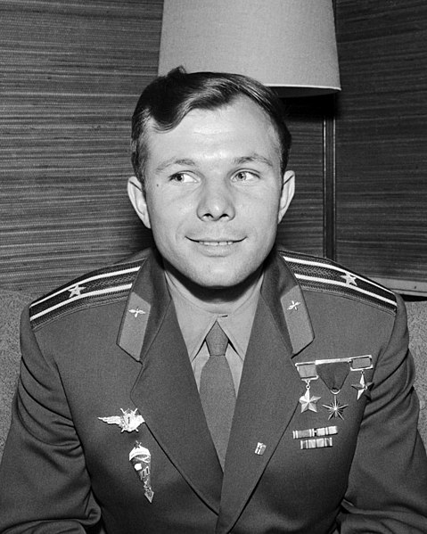
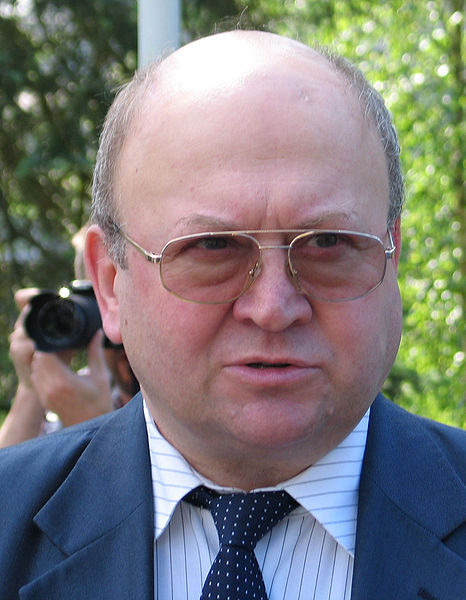
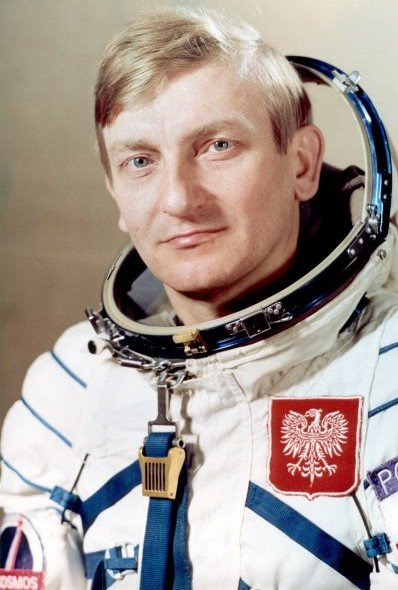
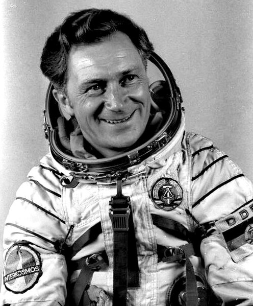
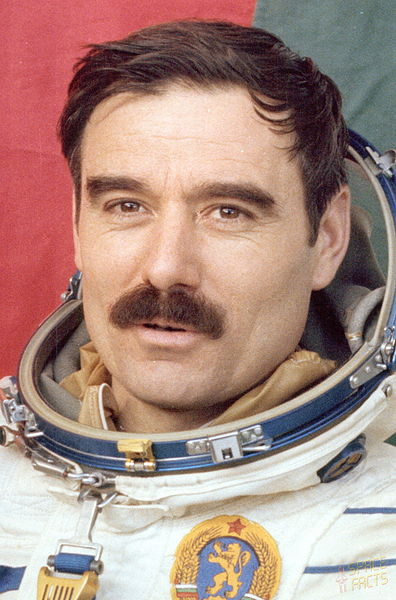

Ki számít űrhajósnak?
Az űrhajós (az amerikai terminológiában asztronauta, az oroszban kozmonauta, a kínaiban tajkonauta) űrrepülést végrehajtó személy.
1961 óta több mint 400 űrhajós járt a világűrben szovjet, amerikai, orosz és kínai űrhajókon.
A Nemzetközi Űrhajós Szövetség meghatározása szerint akkor tekinthető valaki űrhajósnak, ha legalább egyszer megkerülte a Földet. Ennek szükséges feltételei:
- 100 kilométeres földfelszín feletti magasság
- 8 km/s (28 800 km/h) sebesség
Az egyes nemzetek első űrhajósai - Sorrend az első repülés éve szerint

Yuri Gagarin

Alan Shepard
A haditengerészeti akadémia elvégzését követően 1944-től tengerésztiszt, 1946-tól a flotta repülőtisztje.
1950-1953 között berepülő pilóta. 1959-től részesült űrhajóskiképzésben. 1961-ben ő lett az első amerikai
űrhajós, aki kijutott a világűrbe.

Vladimír Remek
1976-ban elvégezte a katonai légierő-akadémiát. Ugyanebben az évben űrhajóskiképzést kapott. Ő az első űrhajós,
aki nem szovjet vagy amerikai nemzetiségű. 1978. március 2. – 1978. március 10. között az Interkozmosz-program
keretében Alekszej Gubarjev űrhajó parancsnok mellett a Szojuz–28 kutató pilótája.

Mirosław Hermaszewski
Az 1943. március 26-áról 27-ére virradóra az UPA által véghezvitt vérengzés túlélője.
1965-ben a dęblini katonai főiskola elvégzése után a hadsereg repülőtisztje.
1971-ben a Karol Sverchevski Vezérkari Akadémián diplomázott.
1976. november 25-től kapott űrhajóskiképzést. 7 napot, 22 órát és 2 percet töltött a világűrben.

Sigmund Jähn
1958-tól hivatásos repülőtiszt. 1966-tól 1970-ig a Szovjetunióban a Gagarin-repülőakadémia növendéke volt.
1976. november 25-től űrhajóskiképzésben vett részt. 1978-ban a Szaljut–6 űrállomásra a Szojuz–31,
vissza a Szojuz–29 űrhajó kutatójaként a második Interkozmosz-űrrepülés programját teljesítette.
Összesen 7 napot, 20 órát és 49 percet töltött a világűrben

Georgi Ivanov
1964-ben mérnök-pilótaként fejezte be a katonai főiskolát.
1978. március 1-től kapott űrhajóskiképzést. Bulgária első űrhajósaként a Szojuz–33 fedélzetén mint kutatóűrhajós jutott ki a világűrbe.
Ez volt a negyedik emberes Interkozmosz-űrrepülés.